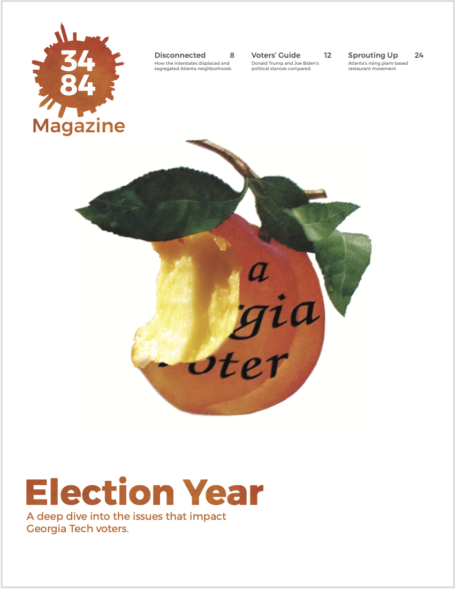
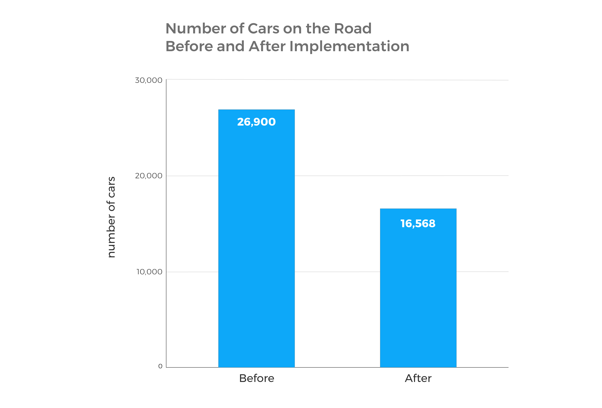
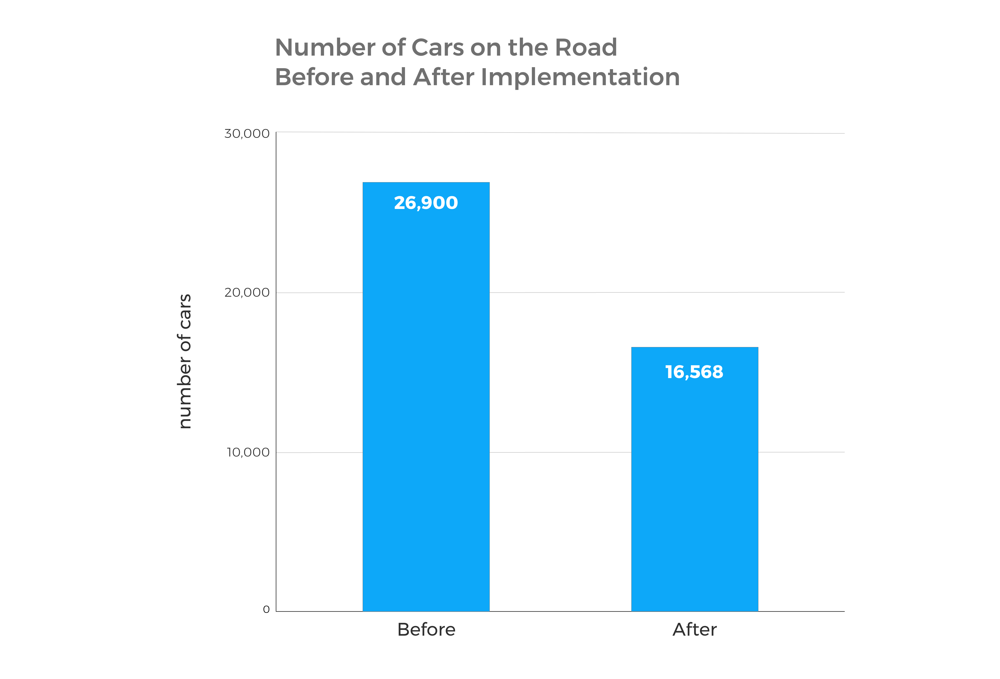
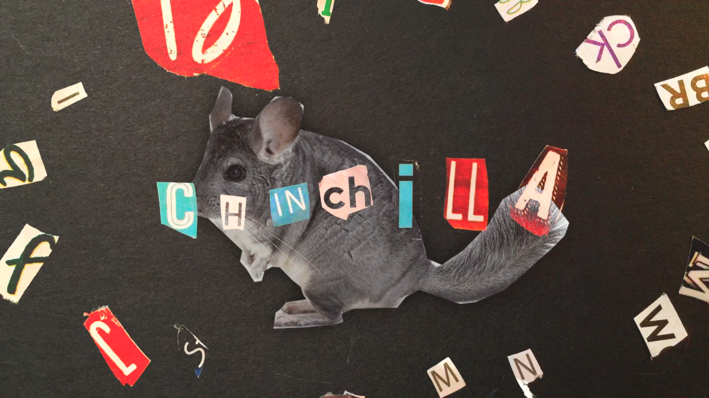
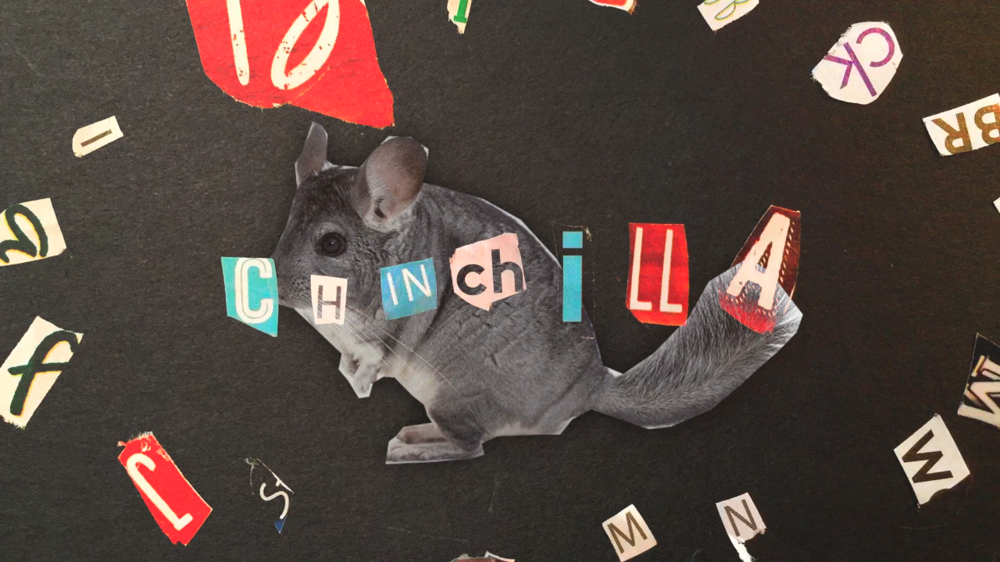

SAM BASKIN
Featured Work


3484 Magazine is a semesterly news magazine at Georgia Tech that focuses on long term issues in Atlanta. I co-founded the magazine in my freshman year at Tech, establishing style guides, color palettes, and guidelines for articles. The magazine is print and digital. I've created content such as article layouts, infographics, and social media posts.


The Socially Aware Mobility Lab is working to modernize Atlanta's transportation network. I create data visualizations for various projects that the team is working on, both providing insight on the projects and allowing an accessible way for the public to understand the impact of the projects.
 

VeriSolutions is an internet-of-things startup that sells solutions for digital temperature monitoring. While interning there, I designed a new data analytics dashboard, created infographics, videos, and developed new pages for the outward-facing website for desktop and mobile.
I started Sam's Neat Projects because of a lack of easy-to-understand Arduino tutorial videos online. Eventually it evolved from Arduino tutorials to tutorials on STEM projects for kids. My goal was to create tutorials that were aesthetically pleasing, easy to understand, and short. I combined an overhead camera rig with stop motion photography to create a unique DIY style.
Freelance design and video work
 
